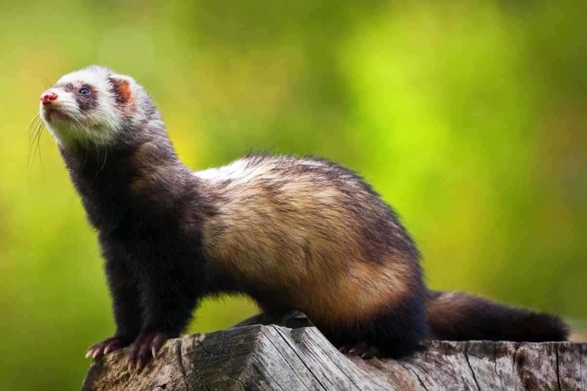
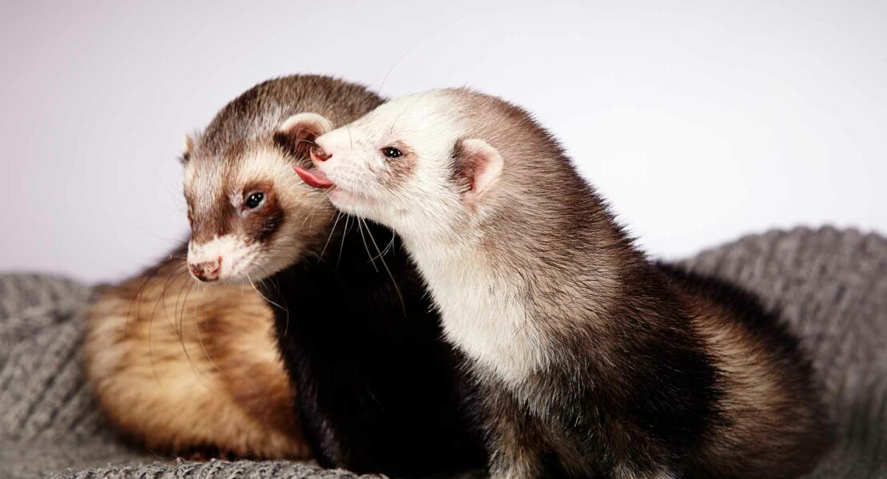

Alimentos Prohibidos Para hurones
En la actualidad, cada vez más personas optan por adoptar hurones como mascotas no solo por su encantador aspecto, sino también por su inteligencia y su comportamiento activo y curioso. A pesar de no demandar tanto tiempo como otros animales de compañía, sus tutores también deben comprometerse para proporcionarle algunos cuidados básicos para los hurones.
En este sentido, la alimentación del hurón es un aspecto clave para el desarrollo de sus capacidades físicas, emocionales, cognitivas y sociales. Todos los hurones necesitan una nutrición completa y equilibrada para preservar su óptima salud y disfrutar una vida sana y feliz.
En este nuevo artículo del ExpertoAnimal, te contamos cuáles son los alimentos prohibidos para hurones que no deben formar parte de su dieta para prevenir intoxicaciones, problemas digestivos efectos secundarios, como convulsiones, mareos, letargo y dificultad para respirar.
A continuación te mostramos algunos alimentos prohibidos para los hurones:
Chocolate
Café
Lácteos
Azúcares
Cebolla
Ajo
Alimentos humanos
Cereales
Huesos cocinados
Estos alimentos pueden resultar dañinos y hasta tóxicos para su organismo. Así mismo, te recomendamos consultar con un veterinario especializado en pequeños mamíferos para saber más acerca de la alimentación de los hurones.

Moquillo en hurones - Síntomas y tratamiento
El hurón es un pequeño mamífero carnívoro perteneciente a la familia Mustelidae. En los últimos años, se ha vuelto cada vez más popular como mascota, por lo que en ExpertoAnimal te informaremos de lo más importante sobre esta especie.El moquillo es una enfermedad que resulta mortal para estos animales en la mayoría de los casos, por lo que conocer la forma en que se manifiesta y la mejor manera de evitar el contagio es esencial para evitar un triste desenlace. Es por eso que te presentamos este artículo sobre moquillo en hurones, sus síntomas y tratamiento. ¡Sigue leyendo!
Síntomas del moquillo en hurones: Los síntomas son diversos y, si no se detectan a tiempo, empeoran hasta provocar la muerte del hurón. Después de producirse el contacto con el virus, la enfermedad se manifestará entre 6 a 12 días después, y es común confundirla al principio con una simple influenza. Entre los síntomas que aparecen al inicio es posible mencionar:
Fatiga general
Fiebre superior a 39 grados centígrados
Hiperqueratosis (endurecimiento de las almohadillas de las patas)
Diarreas y vómitos
Deshidratación
Falta de apetito
Secreciones purulentas en los ojos y la nariz
Sensibilidad a la luz
Tratamiento del moquillo en hurones Lamentablemente, el moquillo resulta mortal para los hurones el 99% de las veces, solo un 1% llega a sobrevivir. No existe cura ni medicamento específico para la enfermedad, por lo que el tratamiento que se aplica tiene propósitos paliativos, es decir, está destinado a disminuir el dolor y las molestias experimentadas por el hurón. Se recomiendan antibióticos y antipiréticos, así como también alguna crema o ungüento que pueda mejorar la molestia de las patas. De igual forma, la debilidad impedirá al pequeño mamífero comer, por lo que será necesaria la alimentación asistida basada en líquidos. Es necesario estar conscientes de que el virus puede empeorar en cualquier momento y atacar el sistema nervioso, en cuyo caso no existe terapia que pueda revertir la inminente cercanía de la muerte. En estos casos, se recomienda la eutanasia, aplicada por un profesional, para evitar el dolor y el sufrimiento al hurón. Para evitar un triste desenlace, es necesario el diagnóstico temprano y aplicar el tratamiento indicado por el veterinario de manera inmediata.

¿Cuándo es la mejor edad para castrar un hurón?
Este pequeño mustélido es sin duda uno de los animales de compañía más apreciados, sin embargo, la llegada de su edad reproductiva puede ser todo un problema, especialmente si tenemos a varios de estos mamíferos en casa. Si tienes un hurón macho o hembra sin castrar, en ExpertoAnimal te daremos algunos consejos e indicaciones que debes tener cuenta antes de valorar la edad o el precio en las distintas clínicas. Si te estás preguntando ¿cuándo es la mejor edad para castrar a mi hurón? Sigue leyendo, a continuación te lo explicamos todo:
Tanto en machos como en hembras, lo ideal es que podamos esperar hasta que el hurón tenga, al menos, 15 meses, aunque no siempre sea posible. No obstante, la cirugía no debería realizarse antes de los 12 meses de vida. A continuación, vamos a diferenciar entre machos y hembras a la hora de realizar la castración.
¿Qué hacer si la sexualidad aparece antes de los 15 meses? Puede que nuestro veterinario nos aconseje tratar de cortarlo jugando con las horas de luz, y si no funciona, aplicar las misma hormonas que en el caso de la hembra. Además, se debe considerar que nunca debemos tener cerca hembras castradas o sin castrar. Si tiene acceso a ellas, o a su olor, nuestros intentos fracasarán.

Castrar un hurón hembra: La castración en hembras (extirpación de ovarios y útero), tiene con finalidad suprimir toda actividad reproductora. Las huronas tienen ovulación inducida, es decir, hasta que no hay cópula, los signos celo no desaparecen. En contadas ocasiones hay ovulación espontánea, pero es difícil que ocurra (lo mismo que pasa con gatas y conejas). Por ello su celo es permanente una vez que aparece. El problemas es que los estrógenos, la hormona que está alta durante el celo, son tóxicos en altas cantidades para la médula ósea. Que el celo se prolongue más de una semana ya comienza a ser preocupante y pone en peligro la vida de nuestra hurona. Por ello, aunque la recomendación sea esperar hasta los 15 meses como mínimo, sabemos que nuestra hurona empezará a celar sobre los 7-9 meses (es orientativo y depende de muchos factores: las horas de luz, el peso alcanzado, genética, alimentación y hábitat...).
Castrar un hurón macho En los hurones macho, los signos de celo son más similares a los de los gatos, por comparar con otro animal más conocido:
Marcaje por todo el territorio (nuestra casa)
A veces, agresividad
Puede liberar más a menudo la secreción de sus glándulas anales
A veces percibimos su olor más intenso
El pelaje puede aparecer color ocre y untuoso
Podemos ver los testículos mucho mayores de lo habitual, aunque no se da siempre. Esta especie los tiene situados bajo el ano, al igual que los gatos, aunque el pene aparezca en la zona media del abdomen.
No obstante, como siempre, cada hurón es un mundo. Cualquier comportamiento que se salga de lo normal, puede indicarnos que ha llegado el momento. Recordemos que el celo aparece en hurones (machos y hembras) con el incremento de las horas de luz, con lo que si ha nacido en Junio, lo más probable, es que aparezca a finales de Enero del siguiente año. Suelen ser un poco más madrugadores a la hora de comenzar su actividad reproductora que las hembras. En hurones macho resulta más efectivo el reducir al máximo las horas de luz, para retrasar la madurez sexual hasta la edad deseada, es decir, los 15 meses de vida. Disponer de una jaula donde poder dejarlos temprano y despertarlos tras 16 horas de oscuridad, puede retrasar de forma natural la llegada del celo. La temperatura también influye mucho, el frío puede hacer que el celo cese o se retrase.
